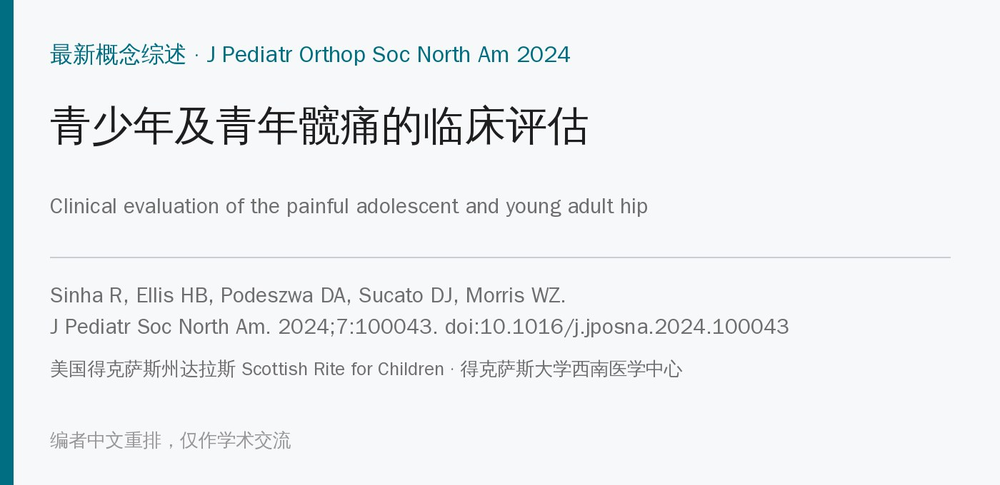
🔖原文信息（编者中文重排）
📚 文献信息
▪ Sinha R, Ellis HB, Podeszwa DA, Sucato DJ, Morris WZ. Clinical evaluation of the painful adolescent and young adult hip. J Pediatr Soc North Am. 2024;7:100043. doi:10.1016/j.jposna.2024.100043
▪ 中文题目：青少年及青年髋痛的临床评估
▪ 作者来自美国得克萨斯州达拉斯 Scottish Rite for Children 和得克萨斯大学西南医学中心
▪ 文章类型：最新概念综述（Current Concept Review），与同期一篇影像学评估综述配套
• 青少年和青年髋痛中，可能导致髋关节早期退变的两大原因是髋臼发育不良（不稳）和股骨髋臼撞击（FAI）
• 其他常见原因还有肌肉拉伤、肌腱炎、弹响髋、股骨头骨骺滑脱（SCFE）、Perthes 病、骨突炎和骨突撕脱骨折
• 影像之前，问诊和查体是第一步，决定后续检查和保髋方向
• 综述目的：把问诊、查体和针对病因的特殊检查整合成一套完整的评估流程
• 这是一篇叙述性综述，没有检索策略、纳入标准或证据分级，作者根据文献和临床经验整理
• 按问诊 → 视诊与步态 → 触诊 → 关节活动度 → 肌力 → 特殊检查的顺序展开，并用 10 幅照片演示
• 特殊检查分三组：撞击和盂唇病变（表 1）、不稳或关节囊功能不全（表 2）、弹响髋；部分检查给出了文献报道的敏感度、特异度和信度
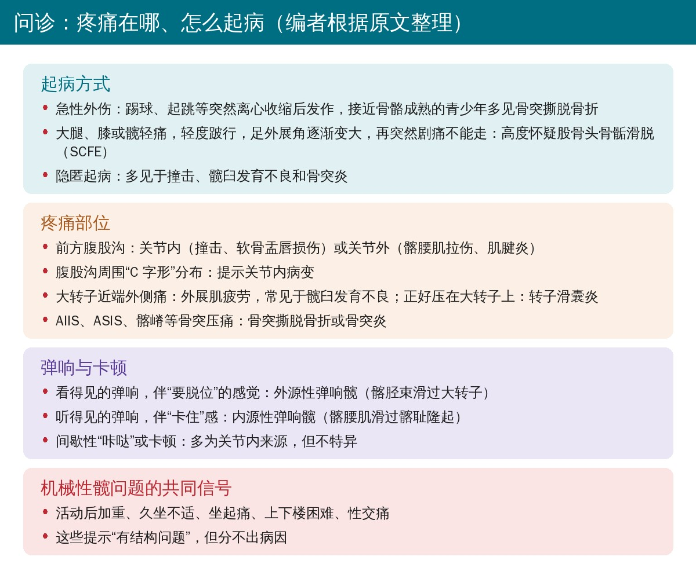
🔖编者根据原文整理
• 问清部位、性质、起病方式和病程；病程长短能先缩小鉴别范围
• 足外展角逐渐变大、轻度跛行后突然剧痛不能行走，高度怀疑 SCFE
• 大转子近端的外侧痛多是外展肌疲劳，髋臼发育不良的生物力学劣势会加重这种疲劳
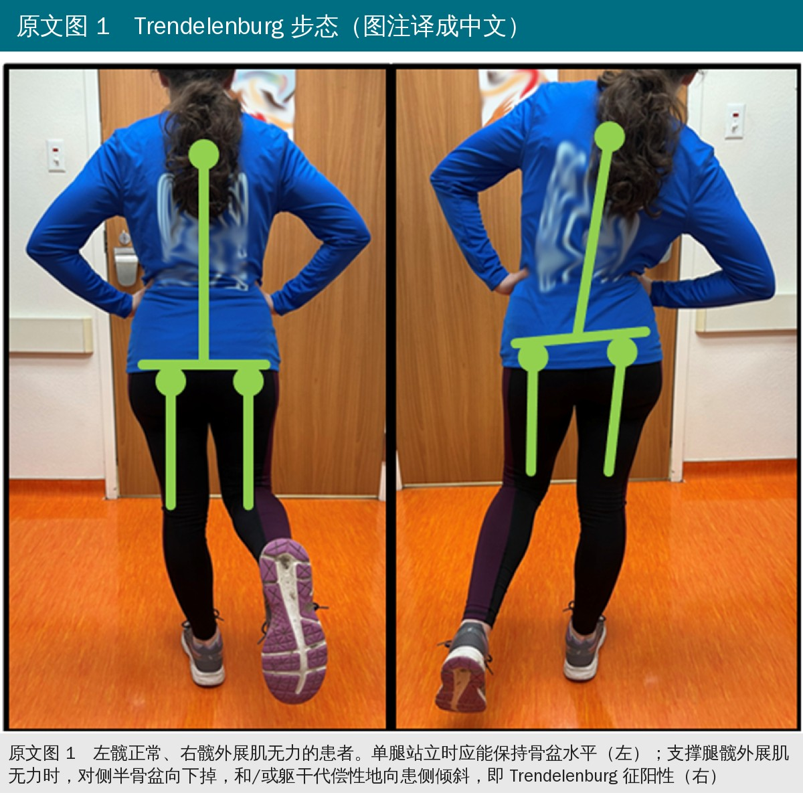
🔖原文图 1（照片为原图，图注编者译成中文）
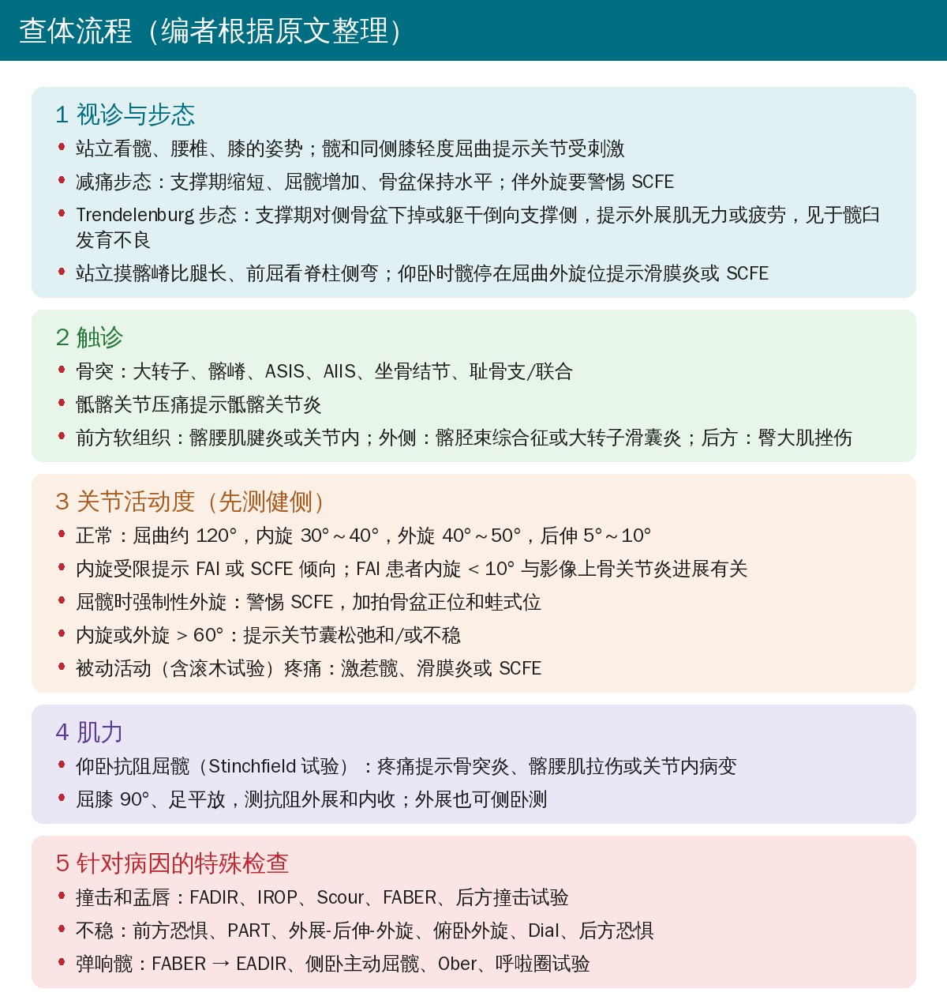
🔖编者根据原文整理
• Trendelenburg 步态：外展肌不足以维持骨盆水平，对侧骨盆下掉，或躯干倒向支撑侧来减小外展肌需要的力，常见于髋臼发育不良
• 正常活动度（青少年和青年）：屈曲约 120°，内旋 30°～40°，外旋 40°～50°，后伸 5°～10°；后伸最好侧卧、屈膝 90° 测
• 内旋受限提示 FAI 或 SCFE；FAI 患者内旋 < 10° 与影像上骨关节炎进展有关
• 强制性外旋：屈髋时髋自动倒向外旋，警惕 SCFE，需拍骨盆正位和蛙式侧位
• 内旋或外旋 > 60°：提示关节囊松弛和/或不稳
• 直腿抬高出现皮节分布的放射痛，提示脊柱病变，尤其是椎间盘突出
• Stinchfield 试验（仰卧抗阻直腿抬高）疼痛：提示骨突炎、髂腰肌拉伤或关节内病变
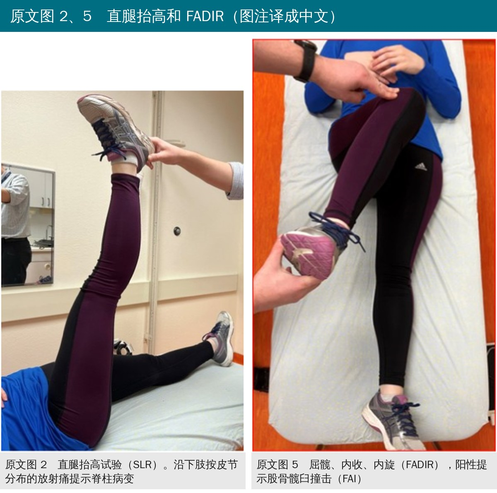
🔖原文图 2、5（照片为原图，图注编者译成中文）
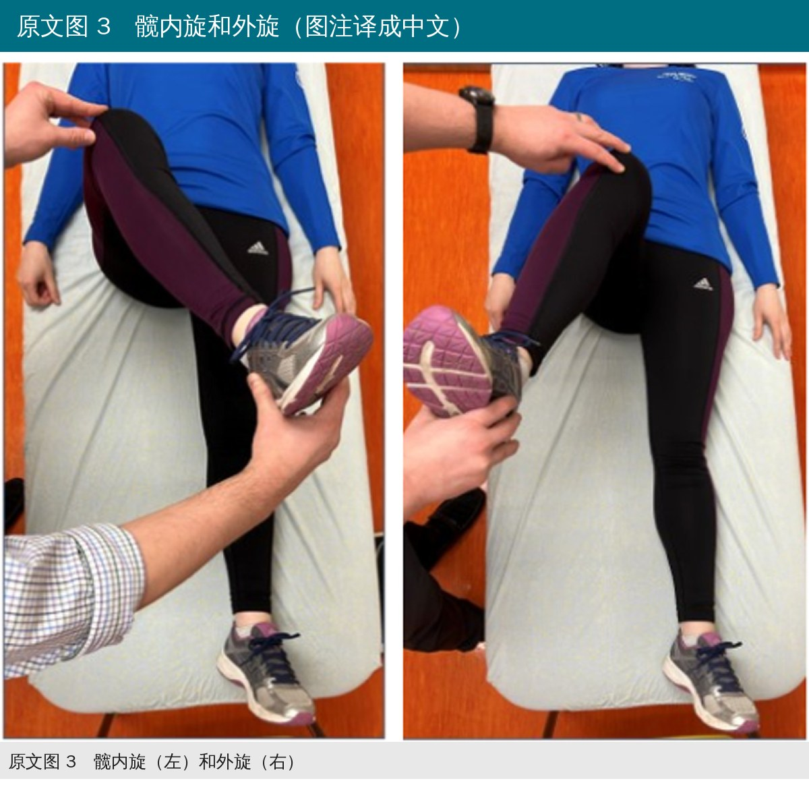
🔖原文图 3（照片为原图，图注编者译成中文）
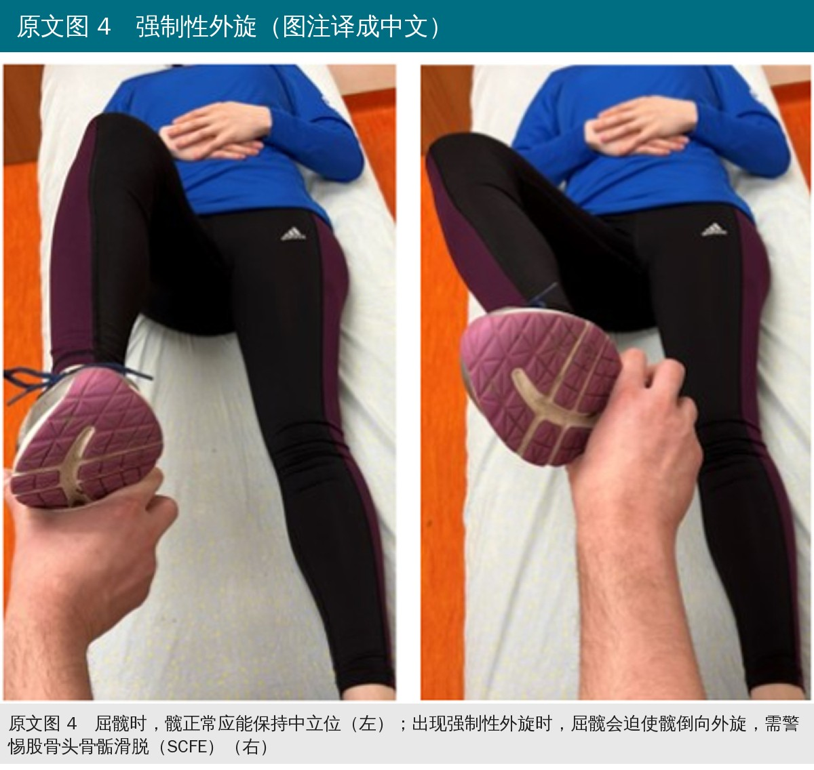
🔖原文图 4（照片为原图，图注编者译成中文）
• FADIR：仰卧或侧卧，被动屈曲、内收、内旋，再现髋痛为阳性，提示前方/前外侧撞击；屈髋 90° 时敏感度 51%～100%，特异度 89%，观察者间一致性 96%
• IROP：FADIR 加轴向压力，提示前方撞击，敏感度 75%～89%；对关节内病变的阳性预测值高于 Stinchfield、Scour 和 FABER
• Scour 试验：轴向加压，从屈曲内旋位移到外展后伸位，撞击多在髋臼缘 10 点到 3 点之间，敏感度 50%～100%
• FABER：屈曲、外展、外旋并下压膝；同侧前方腹股沟痛提示 FAI 和/或盂唇病变，对侧后方痛提示骶髂关节；敏感度 41%～97%，特异度 18%～100%，观察者间信度 98%
• 后方撞击试验：仰卧在床尾、腿自然下垂，患髋后伸、外展、外旋，再现后方痛为阳性；敏感度只有 21%
• 前方恐惧试验：腿垂在床边，对侧髋屈曲，患髋被动后伸加外旋，出现前方腹股沟痛或恐惧感为阳性；敏感度 71%，特异度 89%
• 俯卧恐惧复位试验（PART）：俯卧，患髋后伸 10°～15°、外展 10°，在臀横纹远端向前推股骨诱发前方痛、松手后缓解为阳性；提示髋臼前方覆盖不足，与 LCEA、FEAR 指数、前壁指数和外侧眉弓上斜等影像不稳指标相关，评估者内和评估者间信度都很好，敏感度和特异度还需研究
• 外展-后伸-外旋试验：侧卧，患髋外展 30°、后伸再外旋，前方腹股沟痛或恐惧感提示前方不稳；敏感度 81%，特异度 89%
• 俯卧外旋试验：俯卧屈膝 90°，腿越过中线使髋外旋，在大转子后方向前加压；敏感度只有 33%，但特异度 98%
• Dial 试验：仰卧伸髋伸膝，把足被动内旋到底后松手，回弹后的外旋大于健侧，或足与床面夹角 < 20° 为阳性，提示前方关节囊不稳
• 后方恐惧试验：屈髋 90°、内收内旋，向后推膝，再现后方痛或恐惧感提示后方不稳
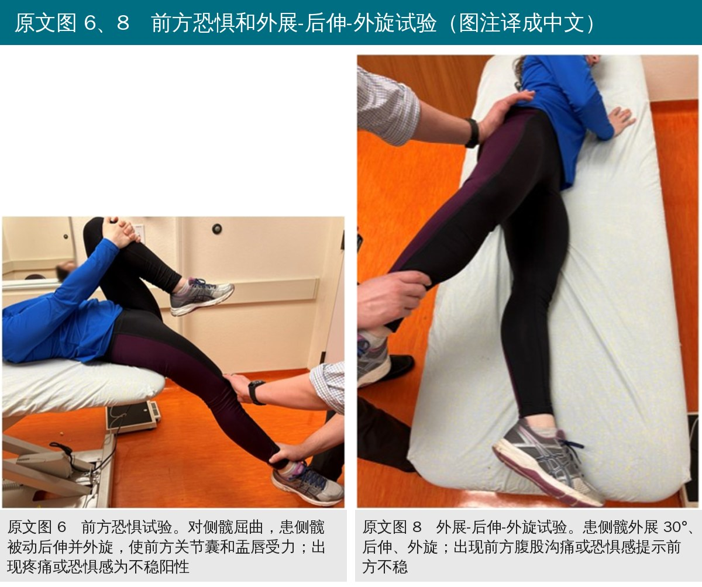
🔖原文图 6、8（照片为原图，图注编者译成中文）
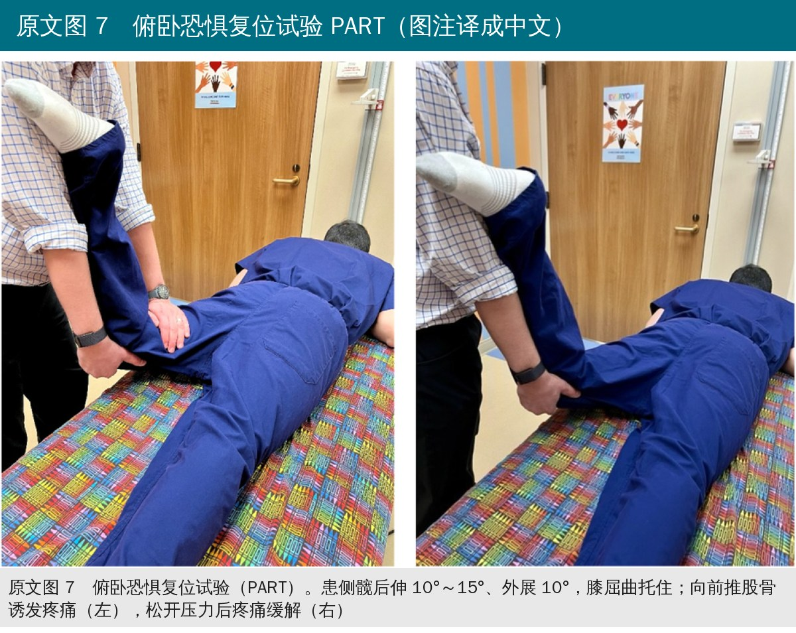
🔖原文图 7（照片为原图，图注编者译成中文）
• 内源性：从 FABER 位移到后伸、内收、内旋位（EADIR），再现常可听见的弹响，是髂腰肌腱滑过髂耻隆起
• 外源性：侧卧主动屈髋，再被动后伸、外展，看得见的弹响是髂胫束滑过大转子；也可站立内收位做环转（“呼啦圈”试验）
• Ober 试验：侧卧，髋被动后伸外展、托住膝，再让腿靠重力缓慢内收，内收受限提示髂胫束紧张，常与外源性弹响髋并存
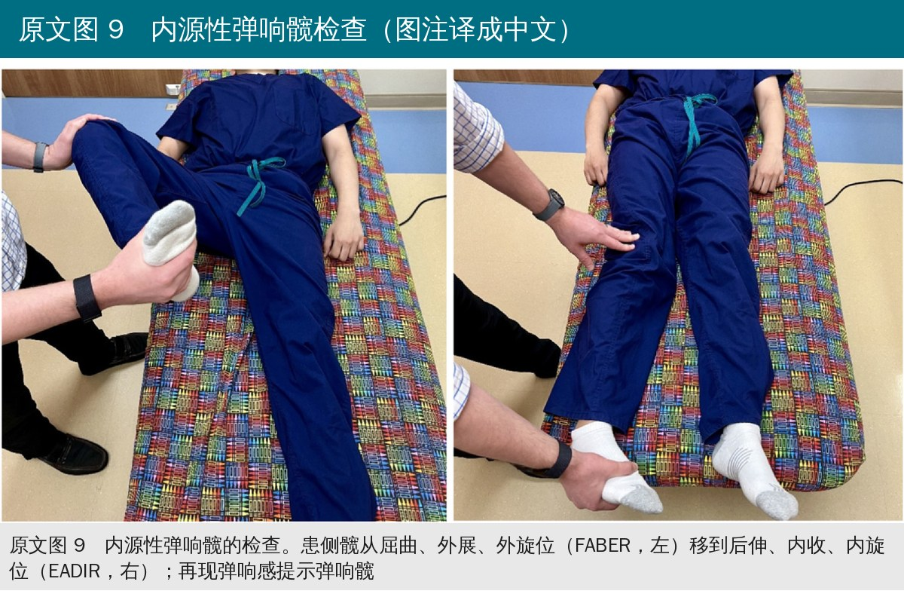
🔖原文图 9（照片为原图，图注编者译成中文）
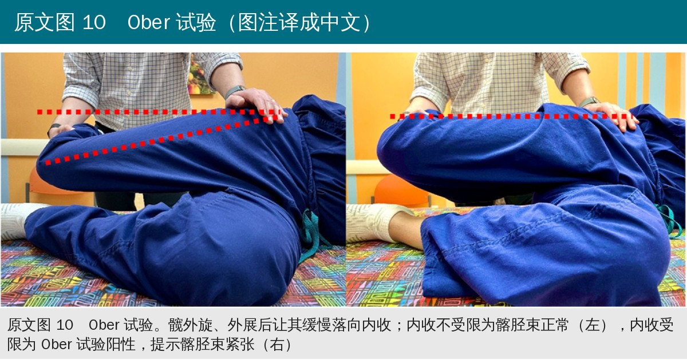
🔖原文图 10（照片为原图，图注编者译成中文）
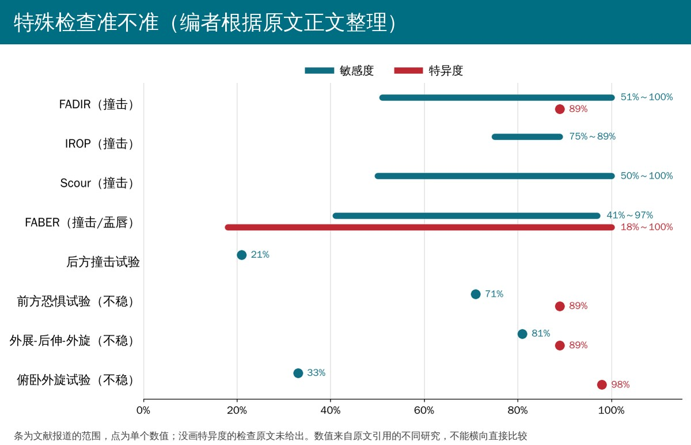
🔖编者根据原文正文整理
• 详细的问诊和查体仍是首诊评估的“金标准”，能准确找到疼痛来源、加快决策
• 特殊检查的描述、操作方法和信度在文献中差异很大，必须结合症状和影像来诊断，不能单靠某一个试验
• 四个关键概念：机械性症状提示有结构问题但分不出病因；Trendelenburg 步态常见于髋臼发育不良；屈髋强制性外旋要拍片排除 SCFE；PART 阳性与影像上的不稳指标相关
• 定位是教学性综述：结构清楚、照片直观，适合当查体清单，但没有系统检索，也没有对证据质量分级
• 准确度数字来源杂：敏感度和特异度来自不同研究、不同人群和不同参考标准，很多是成人 FAI 或关节镜人群，不一定适用于青少年
• 范围太宽的数字信息量有限：FADIR 敏感度 51%～100%、FABER 特异度 18%～100%，说明结论高度依赖研究和操作方法
• 不稳检查的证据更少：PART 只有信度和影像相关性的数据；Dial、后方恐惧和轴向牵拉试验没有给出准确度
• 作者都是小儿骨科医生：视角偏向结构性病变和保髋手术，对肌肉、肌腱、腰骶和运动链因素着墨较少
• 表 2 多出一个试验：轴向牵拉试验（Axial Distraction Test，屈髋屈膝 30° 加轴向牵拉）只出现在表 2，正文没有介绍
• FABER 的定位前后不一：正文说同侧前方痛提示 FAI 和/或盂唇病变，但表 1 的“撞击部位”只写了大转子与髂胫束、大转子与坐骨之间的后外侧撞击
• 外展-后伸-外旋试验没有出处：正文给出敏感度 81%、特异度 89%，但这一句没有标注参考文献
• 后方撞击试验的出处：敏感度 21% 引自文献 6，而文献 6 是关于症状性前方撞击临床表现的研究（编者根据参考文献标题推断）
• FADIR 的敏感度与特异度不对称：敏感度给的是 51%～100% 的范围，特异度只给了一个 89%，没有说明来自哪项研究
• 排版和拼写：原文有“grater trochanter”“coxa salta interna”“condition-sepcific”“positivetest”等拼写错误，不影响内容
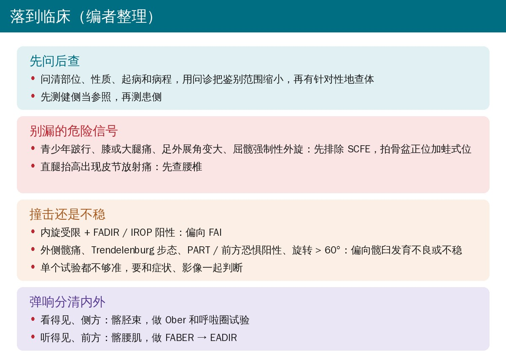
🔖编者整理
• 先排除不能漏的：青少年跛行伴膝或大腿痛、足外展角变大、屈髋强制性外旋，先拍骨盆正位加蛙式位排除 SCFE；骨突压痛加急性起病，想到撕脱骨折
• 用问诊定方向：前方腹股沟或 C 字形疼痛查关节内，外侧痛查外展肌和大转子，骨突痛查骨突，弹响分清看得见（髂胫束）还是听得见（髂腰肌）
• 撞击和不稳要成组看：内旋受限加 FADIR/IROP 阳性偏向 FAI；外侧痛、Trendelenburg 步态、PART/前方恐惧阳性、旋转 > 60° 偏向不稳
• 高敏感度的试验用来排除，高特异度的用来确认：例如俯卧外旋试验敏感度低但特异度 98%，阳性更有价值
• 康复师的角色：查体发现结构性问题（SCFE、明显发育不良或撞击）要转骨科和影像；外展肌无力、髂胫束紧张、髂腰肌问题可同时纳入康复评估
表 1 股骨髋臼撞击（FAI）的查体手法
| 体位 | 手法 | 操作 | 撞击部位 |
|---|---|---|---|
| 仰卧或侧卧 | 屈曲-内收-内旋（FADIR） | 患髋屈曲、内旋、内收 | 髋臼前缘/前外侧缘与股骨头颈交界处 |
| 仰卧 | 内旋加压（IROP） | FADIR 加轴向压力 | 髋臼前缘与股骨头颈交界处 |
| 仰卧 | Scour 试验 | 轴向加压，髋从屈曲内旋位移到外展后伸位 | 髋臼缘 10 点到 3 点之间与股骨头颈交界处 |
| 仰卧 | 屈曲-外展-外旋（FABER） | 髋屈曲、外展、外旋，并向下压膝 | 大转子与髂胫束之间的后外侧撞击；大转子与坐骨之间的深部后外侧撞击 |
| 仰卧 | 后方撞击试验 | 躺在床尾、双腿自然下垂，患髋后伸、外展、外旋 | 髋臼后缘与股骨头颈交界处 |
表 2 不稳的查体手法
| 体位 | 手法 | 操作 | 阳性表现 | 诊断 |
|---|---|---|---|---|
| 仰卧 | 前方恐惧试验 | 下肢垂在床边，髋后伸并外旋 | 前方腹股沟痛或恐惧感 | 前方不稳 |
| 俯卧 | 俯卧恐惧复位试验（PART） | 髋后伸 10°～15°、外展 10°，向前推股骨 | 向前推股骨时出现前方髋痛，松开压力后缓解 | 前方不稳 |
| 侧卧 | 外展-后伸-外旋试验 | 患髋外展 30°、后伸，再外旋 | 前方腹股沟痛或恐惧感 | 前方不稳 |
| 俯卧 | 俯卧外旋试验 | 腿越过中线使髋外旋，在大转子后方向前加压 | 前方腹股沟痛或恐惧感 | 前方不稳 |
| 仰卧 | Dial 试验 | 足被动内旋到最大后松开，让其自行回到外旋位 | 足静止时外旋大于对侧，或足与床面夹角 < 20° | 前方不稳 |
| 仰卧 | 轴向牵拉试验 | 髋、膝屈曲 30°，施加轴向牵拉力 | 疼痛或恐惧感 | 不稳 |
| 仰卧 | 后方恐惧试验 | 髋屈曲 90°、内收、内旋，向膝施加向后的力 | 后方髋痛或恐惧感 | 后方不稳 |
欢迎关注骨科康复小黄公众号，获取更多物理治疗的专业知识！
📄参考文献：
Sinha R, Ellis HB, Podeszwa DA, Sucato DJ, Morris WZ. Clinical evaluation of the painful adolescent and young adult hip. J Pediatr Soc North Am. 2024;7:100043. doi:10.1016/j.jposna.2024.100043
本文为中文解读，仅作学术交流：照片引自原文图 1～图 10（照片内无英文，图注由编者译成中文），问诊卡、查体流程卡、特殊检查准确度图和临床卡为编者根据原文整理，表格为编者翻译。原文 © 2024 The Authors，由 Elsevier 代表北美小儿骨科学会出版，采用 CC BY-NC 4.0 许可。